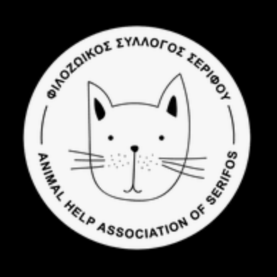

Wir sind alle Lebewesen und bringen eine Geschichte mit uns. Die Gründe wieso wir auf dem Maima-Hof auf ein Zuhause warten sind unterschiedlich.
Wir freuen uns sehr, dass du dich für uns interessierst und wir würden uns freuen, wenn wir uns kennenlernen würden!
Vereinbare einen Termin und komm uns besuchen.
((Kontaktformular))
Einen Hund zu adoptieren bedeutet, eine grosse Verantwortung zu übernehmen, meist für viele Jahre. Eine gründliche Vorbereitung ist daher die wichtigste Voraussetzung: